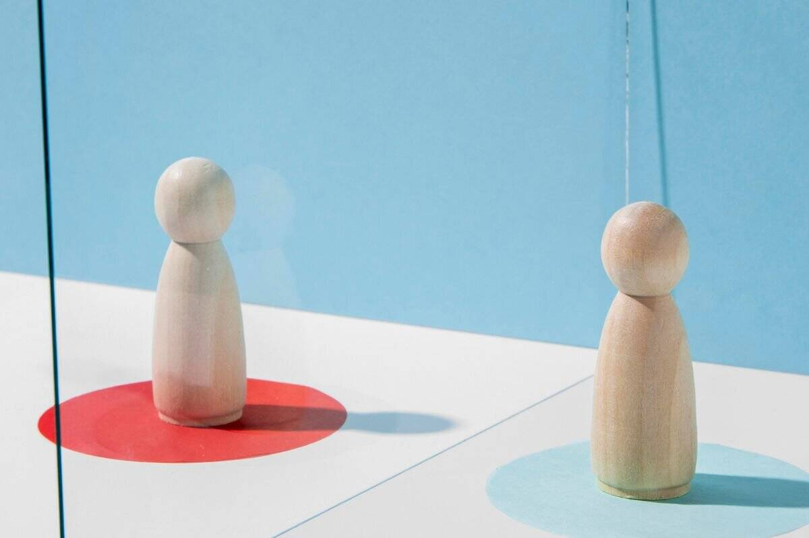

Ogni notizia ha tante voci quante sono le penne che la scrivono.
Un giornale sceglie un titolo, un altro ne sceglie uno opposto; uno mette la notizia in prima pagina, un altro la nasconde in fondo.
Nessuno mente del tutto, ma nessuno racconta tutto.
"Il Contribuente" nasce per mettere queste voci una accanto all'altra — italiane e straniere — senza sceglierne una al posto tuo.
I fatti restano fatti. Il pensiero, quello, resta tuo.
Edizione digitale2 Settembre 2026Rassegna stampa quotidiana
Il Contribuente
Italia, Europa, geopolitica, immigrazione, mercati e benessere — sintesi multi-fonte, con confronto diretto tra testate diverse sugli stessi fatti, senza etichette politiche.
★ IRAN RISPONDE SU TRE FRONTI: MISSILI SULLA GIORDANIA, ALLARME DRONI A KUWAIT E BAHRAIN. TRUMP: "COLPITI I RADAR QUASI PRONTI"★ NEPAL-TIBET, IL BILANCIO SUPERA I 1.000 MORTI E 4.400 DISPERSI: IL NEPAL CHIEDERÀ I DANNI A CINA, USA E INDIA★ RAI NELLA BUFERA: RANUCCI CONTESTA LA RIMOZIONE DA REPORT, ANCHE FRANCESCA FAGNANI PRONTA A LASCIARE★ UE: "VALUTEREMO LA PROROGA DELLO STOP SCHENGEN DI ITALIA E SPAGNA"★ VON DER LEYEN SENTE MERZ: "GLI ATTACCHI IBRIDI RUSSI AVRANNO UNA RISPOSTA", BERLINO ACCUSA MOSCA PER IL DRONE DI LIPSIA★ PETROLIO OLTRE 91 DOLLARI, BORSE IN ROSSO E BTP AI MASSIMI DAL 2023 PER LA TENSIONE IRAN-USA★ BRESCIA, RAPINA AL SEMAFORO CON UNA PISTOLA: 58ENNE COLPITO ALLA TESTA★ GRUPPO CINESE "FIRE ANT" TRASFORMA I ROUTER CISCO IN PIATTAFORME DI SPIONAGGIO★ OPENAI COMPRA DECINE DI MIGLIAIA DI MAC PER ADDESTRARE I PROPRI AGENTI IA★ CRUSCOTTO VIMINALE: SBARCHI IN CALO DEL 54% NEL 2026, RIMPATRI IN AUMENTO
Benzina
2,027€/L
Prezzo medio self, in lieve rialzo
self, media nazionale (Mimit, 2/9)
Diesel
2,131€/L
Prezzo medio self, in lieve rialzo
self, media nazionale (Mimit, 2/9)
Petrolio
~88€
Brent oltre 91$ al barile, +3,45%
al barile (FIRSTonline, 1/9)
Gas TTF
~71,50€
71,50€/MWh, +2,5%, tensioni Iran-Usa sui mercati energetici
Le Guardie della Rivoluzione islamica (Corpo dei Pasdaran), un ramo delle forze armate iraniane distinto dall'esercito regolare, con compiti di sicurezza interna, proiezione militare regionale e controllo di parte significativa dell'economia iraniana: è l'attore militare più spesso coinvolto negli scontri diretti con Stati Uniti e Israele.
✓ Oggi abbiamo confrontato 38 fonti su 29 testate diverse
Citazione del giorno · 1/2
"Li abbiamo colpiti appena il lavoro era quasi completato."
— Donald Trump, presidente Usa, sui raid contro i radar iraniani
Citazione del giorno · 2/2
"È una questione di responsabilità legale e morale."
— il governo del Nepal, annunciando l'intenzione di chiedere risarcimenti climatici a Cina, Usa e India dopo la frana
Morti nella frana/alluvione tra Nepal e Tibet
1.000+
1.050 in Nepal, 16 in Tibet; oltre 4.400 dispersi complessivi
Missili iraniani intercettati dalla Giordania su 13 lanciati
10
i restanti 3 caduti in zone disabitate, nessuna vittima
Rendimento del Btp decennale, massimo da dicembre 2023
4,17%
spread BTp-Bund stabile a 83 punti base
Rimpatri dall'Italia nel 2026
5.299
+34% nel primo semestre; sbarchi in calo del 54% sul 2025
Dati: Ansa per Nepal-Tibet, Times of Israel per l'intercettazione dei missili in Giordania, FIRSTonline/QuiFinanza per Btp e spread, Sardegnagol/La Voce del Patriota per i dati sui rimpatri (cruscotto Viminale). Numeri soggetti ad aggiornamento nelle prossime ore.
Cosa succede oggi
Oggi 2/9Von der Leyen incontra Rutte a Bruxelles nel quadro delle "crescenti minacce ibride" contro l'Europa
5/9Scade lo sconto di 17 centesimi sulle accise del diesel
7/9Scadenza per Madrid per decidere se prorogare i controlli reciproci sui viaggiatori italiani
9/9Evento Apple "Surprise and Shine": attesi iPhone 18 Pro e il primo iPhone pieghevole
14/9Scadenza della proroga dello stop Schengen tra Italia e Spagna
15/9Voto finale al Senato sulla riforma della legge elettorale; mobilitazione delle opposizioni annunciata per lo stesso giorno
17/9Il Cda Rai discute il caso Ranucci
Confronto
Iran risponde su tre fronti: missili in Giordania, allarme droni a Kuwait e Bahrain. Trump: "Colpiti i radar quasi pronti"
Da sapere per capire
Il 30 agosto gli Usa avevano colpito lanciarazzi dell'Irgc a Larak, nello Stretto di Hormuz; nella notte tra il 30 e il 31 l'Iran aveva risposto contro basi in Giordania ed Emirati. Il 1° settembre lo scontro si è allargato: nuovi lanci contro la Giordania e allarmi da droni anche a Kuwait e Bahrain, entrambi sedi di truppe statunitensi nel Golfo.
Il fatto
L'esercito giordano ha intercettato 10 dei 13 missili balistici lanciati dall'Iran il 1° settembre, con i restanti tre caduti in aree disabitate senza vittime. Kuwait e Bahrain hanno attivato le proprie difese aeree contro droni iraniani, senza danni né feriti riportati. Il presidente Usa Trump ha rivendicato nuovi raid contro le installazioni radar iraniane, dichiarando di averle colpite "appena il lavoro era quasi completato", cioè prima che tornassero pienamente operative.

Prospettiva Usa — Casa Bianca, Pentagono
Raid mirato ai radar iraniani prima che tornassero operativi
Trump inquadra l'attacco come un'azione tecnica e tempestiva: colpire le installazioni radar iraniane appena prossime al ripristino, per impedire a Teheran di riacquisire capacità di sorveglianza sullo Stretto di Hormuz. La Casa Bianca non fornisce un bilancio ufficiale di danni o vittime iraniane.
Il Pentagono continua a presentare la sequenza di raid, iniziata il 30 agosto a Larak, come difensiva: prevenire nuove minacce alla navigazione commerciale nello stretto, da cui transita circa un quinto del petrolio mondiale via mare.
"La risposta ai nemici americani è iniziata": basi e interessi Usa sotto attacco
I media di Stato iraniani presentano l'ondata di missili e droni contro Giordania, Kuwait e Bahrain come l'avvio di una rappresaglia più ampia, descritta come risposta legittima all'aggressione statunitense. Teheran non fornisce un bilancio verificabile di eventuali perdite subite nei raid Usa sui radar.
La narrazione iraniana insiste sul concetto di reciprocità: ogni colpo americano genera, nella ricostruzione di Teheran, una risposta proporzionata su più fronti regionali, a dimostrazione della capacità di colpire ovunque siano presenti interessi Usa nel Golfo.
Amman, Kuwait City e Manama ridimensionano l'entità dei danni
I tre Paesi direttamente coinvolti offrono una lettura più contenuta: la Giordania rivendica l'intercettazione della maggioranza dei missili lanciati, con i pochi caduti finiti in zone disabitate; Kuwait e Bahrain segnalano solo l'attivazione precauzionale delle difese aeree contro droni, senza danni né feriti.
Nessuno dei tre governi del Golfo rivendica un ruolo attivo nello scontro, limitandosi a difendersi: un segnale che, secondo diversi osservatori, riflette la volontà di non essere trascinati direttamente nel conflitto Usa-Iran pur ospitando basi e truppe statunitensi sul proprio territorio.
Resta divergente soprattutto l'inquadramento complessivo: raid tecnico e preventivo secondo Washington, rappresaglia legittima e in corso secondo Teheran. I tre Paesi del Golfo, dal canto loro, minimizzano concordemente i danni sul proprio territorio. Nessuna fonte fornisce, al momento della pubblicazione, un bilancio indipendente e verificato di vittime o danni materiali su nessuno dei fronti.
Dall'estero
Bruxelles frena sulla proroga Schengen: "Valuteremo la richiesta italiana e quella spagnola"
Non le notizie dall'estero in generale, ma cosa scrivono di noi le testate e le istituzioni straniere: qui la lente resta puntata sull'Italia, vista da fuori.
Da sapere per capire
Il 31 agosto l'Italia ha prorogato di 15 giorni lo stop Schengen con la Spagna, deciso ad agosto dopo la crisi migratoria di Ceuta; Madrid ha risposto con controlli reciproci sui viaggiatori italiani.
La Commissione Ue: "Valuteremo la proroga dello stop Schengen di Italia e Spagna"
Un portavoce della Commissione europea ha dichiarato che Bruxelles "valuterà" sia la proroga italiana dei controlli con la Spagna sia l'eventuale richiesta spagnola di reciprocità, senza sbilanciarsi su tempi o esito. La dichiarazione arriva mentre il braccio di ferro tra Roma e Madrid, nato dalla crisi migratoria di Ceuta di fine luglio, prosegue senza una soluzione definitiva.
Secondo QuiFinanza, i controlli italiani sulla frontiera con la Spagna restano prorogati per altri 15 giorni; la Commissione non ha finora contestato formalmente la misura, limitandosi a un ruolo di osservazione mentre i due governi negoziano bilateralmente.
Madrid conferma i controlli reciproci sui viaggiatori italiani per altri 15 giorni
QuiFinanza conferma che, in risposta alla proroga italiana, anche la Spagna ha esteso di due settimane i controlli documentali sui passeggeri in arrivo dall'Italia via mare e aria, replicando lo schema già visto ad agosto.
Il braccio di ferro, nato come misura emergenziale legata a Ceuta, si trasforma così in un contenzioso diplomatico di più lunga durata, con Bruxelles per ora nel ruolo di osservatore più che di arbitro tra i due Stati membri.
Rai nella bufera: il caso Ranucci si allarga, anche Francesca Fagnani pronta a lasciare
Da sapere per capire
Il 28 agosto la Rai ha rimosso Sigfrido Ranucci dalla guida di Report, affidandola a Giulia Presutti e Daniele Piervincenzi, dopo l'attivazione della Commissione per il Codice Etico per i rapporti personali di Ranucci con l'imprenditore Valter Lavitola.
Caso Ranucci: il giornalista contesta la rimozione, la redazione di Report si spacca
Sigfrido Ranucci contesta formalmente come "illegittima" la propria rimozione da Report e annuncia che si opporrà "in sedi giudiziarie". La redazione del programma è divisa: gli inviati storici contestano collettivamente la decisione della Rai, mentre alcuni interni prendono le distanze da dichiarazioni attribuite alla redazione, con il rischio di comunicati di segno opposto. I consiglieri di minoranza in Cda (M5S, Avs) definiscono la scelta "grave e dissennata" e chiedono chiarimenti su come il rapporto personale contestato abbia inciso sull'attività giornalistica.
Il Consiglio di amministrazione Rai discuterà il caso il 17 settembre. Fino ad allora la vicenda resta aperta, con la successione a Report (Presutti e Piervincenzi) già annunciata ma contestata da una parte della redazione storica del programma.
Non solo Ranucci: anche Francesca Fagnani pronta a lasciare la Rai
Il malessere in Rai non riguarda solo Report: secondo il Quotidiano Nazionale, Francesca Fagnani, conduttrice di Belve su Rai2, avrebbe manifestato l'intenzione di rescindere anticipatamente il proprio contratto in esclusiva con l'azienda. Il dissapore nascerebbe dalla mancata assegnazione a Fagnani della conduzione di "Chi l'ha visto?" dopo l'addio di Federica Sciarelli: il programma è stato affidato invece a Raffaella Griggi, storica inviata della trasmissione.
Il caso Fagnani si inserisce in un clima aziendale già teso per la vicenda Ranucci, che ha portato la redazione di Report a proclamare lo stato di agitazione: due fronti diversi che, nello stesso momento, mettono sotto pressione i vertici Rai sulla gestione dei propri conduttori di punta.
Torino, minorenne violentata e aggressore scarcerato dopo 48 ore: Meloni contro la decisione del gip
Un cittadino bengalese di 40 anni, arrestato a Torino con l'accusa di violenza sessuale su una tredicenne e su un'altra donna in un minimarket del quartiere Madonna di Campagna, è stato scarcerato dal gip dopo appena 48 ore. Nel provvedimento il giudice avrebbe valorizzato il fatto che l'uomo abbia "mostrato dispiacere" per l'accaduto, nonostante la Procura avesse chiesto la misura cautelare più severa. La decisione ha scatenato una bufera politica trasversale.
La premier Giorgia Meloni è intervenuta duramente: "Le leggi le abbiamo scritte, e sono più severe che mai", ha detto, sottolineando che forze dell'ordine e Procura hanno fatto il loro lavoro ma che "arriva un provvedimento che la spezza", chiedendosi "chi lo spiega a quella famiglia?". Il ministro della Giustizia Carlo Nordio ha disposto l'invio di ispettori ministeriali per accertare le motivazioni del provvedimento.
Sul caso sono piovute critiche trasversali: Pd, Iv e Fratelli d'Italia hanno annunciato un'interrogazione parlamentare a Nordio, definendo la scarcerazione "surreale e inaccettabile". Il caso si inserisce nel dibattito già acceso sulla sicurezza urbana e sul rapporto tra decisioni giudiziarie e percezione di giustizia da parte dei cittadini.
Genova, giovane accoltellato davanti a Brignole; a Malo banda irrompe di notte nella casa di una vedova disabile
Quattro episodi distinti avvenuti tra il 31 agosto e il 2 settembre in province diverse: cronaca locale, non un fenomeno unico o coordinato.
Da sapere per capire
Le aggressioni e le rapine in abitazione restano un tema ricorrente nel dibattito sulla sicurezza urbana, spesso raccontato in modo frammentario da cronache locali diverse.
Genova, 24enne accoltellato al braccio davanti alla stazione di Brignole
Nel pomeriggio del 1° settembre un 24enne è stato accoltellato al braccio nei pressi della stazione di Brignole, nel centro di Genova. Soccorso in codice rosso, è stato trasportato in ospedale; le sue condizioni non sono in pericolo di vita. Nessun arresto al momento della pubblicazione.
La polizia sta esaminando le immagini delle telecamere di sorveglianza della zona per risalire all'aggressore e ricostruire la dinamica dell'episodio, di cui non sono ancora chiari i motivi.
Malo, banda entra di notte in casa e aggredisce una vedova disabile di 79 anni
Nella notte tra il 31 agosto e il 1° settembre, verso le 3:45, due intrusi sono entrati forzando una finestra nell'abitazione di una donna di 79 anni, vedova e disabile, a Malo (Vicenza), aggredendola mentre dormiva; un terzo complice faceva da palo all'esterno. I tre hanno portato via gioielli, poi recuperati interamente dai Carabinieri.
Tre giovanissimi sono stati fermati: due cittadini italiani e un cittadino marocchino, almeno uno dei quali minorenne. Le indagini dei Carabinieri proseguono per accertare eventuali complicità e la provenienza della refurtiva.
Rovellasca, rissa notturna tra quattro giovani in via Monte Bianco: c'è anche un minorenne
Nella notte tra il 31 agosto e il 1° settembre, alle 3:09, una lite è degenerata in rissa in via Monte Bianco a Rovellasca (Como) tra quattro giovani di 17, 18 e 19 anni. Non risultano ricoveri ospedalieri né arresti; i Carabinieri di Cantù indagano per ricostruire la dinamica, ancora poco chiara.
Il coinvolgimento di un minorenne tra i protagonisti dell'episodio ha portato gli investigatori a procedere con cautela nell'identificazione e nell'accertamento delle responsabilità di ciascuno dei presenti.
Battipaglia, si finsero Carabinieri per rapinare un e-bike: due arresti domiciliari
Due uomini di 31 e 42 anni sono finiti agli arresti domiciliari il 1° settembre per una rapina compiuta il 3 agosto a Battipaglia (Salerno): fingendosi Carabinieri, avevano fermato e derubato di un e-bike un cittadino marocchino, ferendolo nella colluttazione.
Le indagini dei Carabinieri, avviate subito dopo la denuncia della vittima, hanno permesso di identificare i due responsabili e di eseguire la misura cautelare a distanza di circa un mese dai fatti.
Fonte: agenzie locali, 1/9
Europa
Von der Leyen e Rutte si vedono sulle "crescenti minacce ibride": Berlino accusa la Russia per il drone di Lipsia
Da sapere per capire
Ad agosto un drone-bomba era stato individuato nei pressi dell'aeroporto di Lipsia, in Germania; Berlino ne attribuisce la responsabilità alla Russia nel quadro di una più ampia campagna di attacchi ibridi contro l'Europa.
Von der Leyen sente Merz: "Gli attacchi ibridi russi avranno una risposta"
La presidente della Commissione europea Ursula von der Leyen ha sentito telefonicamente il cancelliere tedesco Friedrich Merz dopo che Berlino ha attribuito alla Russia la responsabilità del drone-bomba individuato nei pressi dell'aeroporto di Lipsia. Von der Leyen ha promesso una risposta agli "attacchi ibridi russi", mentre è in programma un incontro con il segretario generale della Nato Mark Rutte, definito dalla portavoce della Commissione Paula Pinho un appuntamento nel quadro delle "crescenti minacce ibride" che l'Europa sta affrontando.
Pinho ha inquadrato l'episodio di Lipsia come parte di "un contesto più ampio di ciò che sta accadendo in Europa", segnalando che il caso tedesco non è isolato ma si aggiunge a una serie di episodi attribuiti a un'azione ibrida russa contro le infrastrutture europee.
Berlino: "La Russia è responsabile dell'attacco ibrido a Lipsia". Ira di Mosca
Il governo tedesco ha formalmente accusato la Russia di essere dietro il drone-bomba individuato nei pressi dell'aeroporto di Lipsia, definendolo un attacco ibrido deliberato contro le infrastrutture nazionali. Mosca ha reagito con irritazione, respingendo l'accusa.
Il caso si inserisce in una serie crescente di episodi attribuiti dagli Stati europei ad azioni ibride russe (droni, sabotaggi, interferenze) che alimentano il coordinamento rafforzato tra Commissione europea e Nato sul fronte della sicurezza continentale.
Undici Paesi Ue propongono un decalogo per superare il veto in politica estera: l'Italia non firma
Undici Stati membri dell'Unione europea — Austria, Belgio, Danimarca, Finlandia, Francia, Germania, Lussemburgo, Paesi Bassi, Romania, Spagna e Svezia — hanno presentato un "non-paper" con cinque principi per limitare l'uso del veto nelle decisioni di politica estera e sicurezza comune, dove vige tuttora la regola dell'unanimità. Il documento è stato inviato all'Alta rappresentante Ue Kaja Kallas e agli altri Stati membri in vista di un Consiglio Affari Esteri informale. L'Italia non figura tra i firmatari.
Tra i punti proposti: ricorrere più spesso all'"astensione costruttiva" invece del blocco netto, evitare di collegare un veto a questioni "sostanzialmente estranee" al tema in discussione, limitare le obiezioni "solo agli aspetti problematici" della proposta, e imporre a chi invoca un interesse nazionale vitale di fornire "motivazioni dettagliate" per consentire una consultazione reale.
L'iniziativa nasce dalla frustrazione di diversi governi per la frequenza con cui, negli ultimi anni, un singolo Paese ha bloccato decisioni comuni su sanzioni, aiuti all'Ucraina o dichiarazioni congiunte. Il non-paper non modifica i Trattati, ma punta a un impegno politico di "leale cooperazione" tra Stati membri.
Germania, sabotaggio con razzi artigianali contro una sottostazione elettrica nel Brandeburgo
Ignoti hanno preso di mira con razzi artigianali la sottostazione elettrica di Turnow-Preilack, nel Brandeburgo, danneggiando i cavi dell'alta tensione e causando un'interruzione parziale della fornitura elettrica nella zona. Le autorità tedesche indagano sull'episodio, l'ultimo di una serie di atti di sabotaggio contro infrastrutture energetiche in diversi Paesi europei nelle ultime settimane.
L'episodio si aggiunge al caso del drone-bomba individuato nei pressi dell'aeroporto di Lipsia, per cui Berlino ha già accusato formalmente la Russia. Le forze dell'ordine tedesche non hanno ancora attribuito ufficialmente la responsabilità dell'attacco alla sottostazione, ma il clima di crescente tensione sulle "minacce ibride" alle infrastrutture critiche europee rende l'episodio oggetto di attenzione immediata da parte degli inquirenti.
Nepal-Tibet, il bilancio supera i 1.000 morti; Gaza, l'Idf colpisce ancora la città dopo un'infiltrazione di una milizia anti-Hamas
Da sapere per capire
La frana e alluvione tra Nepal e Tibet, innescata dal collasso di un ghiacciaio a fine agosto, è una delle peggiori catastrofi naturali della regione negli ultimi anni; il bilancio delle vittime resta in aggiornamento.
Nepal-Tibet, oltre 1.000 morti e 4.400 dispersi: il Nepal chiederà i danni a Cina, Usa e India
Il bilancio della frana-alluvione tra Nepal e Tibet ha superato i 1.000 morti: almeno 1.050 in Nepal (3.916 i dispersi) e 16 in Tibet secondo le autorità cinesi (546 dispersi, dati difficili da verificare indipendentemente). Il governo nepalese attribuisce la catastrofe al cambiamento climatico globale e ha annunciato l'intenzione di chiedere risarcimenti ai maggiori produttori di gas serra — Cina, Usa e India — definendola "una questione di responsabilità legale e morale".
I soccorritori scavano fosse comuni in Nepal e proseguono le ricerche nei tunnel delle centrali idroelettriche con ruspe e cariche esplosive: circa 600 operai risultano ancora dispersi, 279 sono stati recuperati vivi dalle gallerie nei giorni scorsi.
Gaza, l'Idf colpisce di nuovo la città dopo l'infiltrazione di una milizia anti-Hamas
L'esercito israeliano ha colpito il 1° settembre diversi obiettivi nella zona ovest di Gaza City "per eliminare minacce alle forze di sicurezza", secondo il portavoce dell'Idf, precisando che nessun soldato è rimasto ferito. Media locali riferiscono che un'unità di una milizia anti-Hamas sostenuta da Israele si era infiltrata nella zona ovest della città, venendo scoperta dalle forze di Hamas: ne sarebbero seguiti combattimenti a terra, poi l'attacco con drone israeliano.
Secondo fonti palestinesi, almeno una persona sarebbe stata uccisa nell'attacco con drone. L'episodio conferma la persistenza di dinamiche di scontro localizzato a Gaza anche nelle fasi più recenti del conflitto.
Usa contro Iran: raid su Larak, missili iraniani su Giordania ed Emirati. Trump minaccia nuovi attacchi
Gli Stati Uniti hanno bombardato il 1° settembre l'isola iraniana di Larak, nello Stretto di Hormuz, aprendo una nuova fase del conflitto con Teheran. L'Iran ha risposto con missili e droni contro installazioni statunitensi in Giordania ed Emirati Arabi Uniti; una seconda ondata di raid Usa ha colpito le difese aeree iraniane e alcune infrastrutture marittime. Trump ha promesso di intensificare le operazioni, avvertendo che una reazione iraniana porterebbe a un "annientamento completo"; il presidente iraniano ha offerto un cessate il fuoco condizionato al rispetto dell'accordo raggiunto a giugno.
Secondo la tv di Stato iraniana, un missile Usa avrebbe colpito per errore un luogo di matrimonio nella località di Kuhestak, uccidendo almeno quattro civili; Teheran ha rivendicato un contrattacco con missili balistici, le cui vittime restano contestate tra le parti. Il vertice della Shanghai Cooperation Organization, riunito a Bishkek con Cina, Russia, India, Pakistan e altri Paesi, ha condannato gli attacchi Usa contro l'Iran.
L'escalation ha immediati riflessi sui mercati energetici, con il petrolio Brent salito ai massimi da cinque settimane, e riaccende i timori di un allargamento del conflitto nell'area del Golfo, cruciale per il transito di greggio e gas verso l'Europa e l'Asia.
Kiev sotto assedio: 218 droni russi in dodici ore, almeno 12 morti. Zelensky: "Chiuderemo lo spazio aereo russo"
La Russia ha bombardato Kiev con 218 droni per oltre dodici ore consecutive, causando almeno 12 morti secondo le autorità ucraine; Mosca sostiene di averne intercettati 516 su tutto il territorio nazionale nella stessa giornata. Un incendio è divampato anche al terminal petrolifero e del gas di Ust-Luga, sul Mar Baltico, in territorio russo.
Il presidente ucraino Volodymyr Zelensky ha avvertito che, in risposta ai continui attacchi, lo spazio aereo russo verrà "di fatto chiuso", lasciando intendere nuove rappresaglie ucraine con droni a lungo raggio contro infrastrutture ed energia russe. L'episodio conferma l'intensificarsi degli attacchi aerei reciproci tra i due Paesi, in un conflitto che prosegue senza soluzione negoziale in vista.
Petrolio oltre i 91 dollari, borse in rosso e Btp ai massimi dal 2023: la tensione Iran-Usa pesa sui mercati
Da sapere per capire
La ripresa dei combattimenti in Medio Oriente si somma a un contesto già nervoso per l'incertezza sui tassi Fed, spingendo insieme petrolio e rendimenti obbligazionari al rialzo.
Borse europee in rosso, petrolio sopra i 91 dollari: Piazza Affari tiene grazie a Eni ed STMicroelectronics
Il 1° settembre le borse europee hanno aperto in territorio negativo: Francoforte -0,41%, Londra -0,42%, mentre Parigi (+0,17%) e Milano (+0,11%) hanno tenuto meglio. La causa principale è la ripresa degli scontri in Medio Oriente, che ha spinto il petrolio Brent oltre i 91 dollari al barile (+3,45%), riaccendendo i timori sull'inflazione. A Piazza Affari pesano i bancari (Mps -0,85%, Fineco -0,84%, Banco Bpm -0,81%, Mediobanca -0,75%), mentre energia e industria salgono: STMicroelectronics +2,45%, Eni +1,27%.
Il differenziale BTp-Bund resta stabile a 83 punti base, ma il rendimento del BTp decennale sale al 4,17% dal 4,15%, un livello che non si vedeva da dicembre 2023: un segnale che i mercati obbligazionari stanno scontando in modo più marcato il rischio di inflazione legato all'energia.
Bitcoin ed Ethereum in calo: pesano le attese di un rialzo dei tassi Fed
Il Bitcoin quotava 78.154,66 dollari alle 8:00 ET del 1° settembre, in flessione dello 0,33% rispetto al giorno precedente; anche l'Ethereum ha ceduto terreno nella stessa sessione. Secondo lo strumento FedWatch del Cme Group, la probabilità che la Fed alzi i tassi di 25 punti base entro fine mese è salita al 66,4%.
Gli analisti citati da Yahoo Finance collegano il calo delle criptovalute a un doppio fattore: l'aumento dei prezzi del petrolio legato al conflitto Iran-Usa e l'effetto restrittivo di tassi più alti su asset che, come Bitcoin ed Ethereum, non generano interessi per chi li detiene.
Una nanomedicina orale addestra il sistema immunitario contro il cancro: risultati promettenti nei topi
Da sapere per capire
Si tratta di uno studio preclinico, condotto su modelli murini: risultati incoraggianti in laboratorio non equivalgono a una cura pronta per l'uso sull'uomo, che richiede anni di sperimentazione clinica successiva.
Università del Michigan: una nanomedicina orale potenzia l'immunoterapia contro il cancro nei topi
Ricercatori dell'Università del Michigan (Rogel Cancer Center) hanno sviluppato una nanomedicina orale a base di acido 3,4-diidrossibenzoico (DHB), un metabolita prodotto dai batteri intestinali, capace di potenziare l'efficacia delle immunoterapie anticancro. Nello studio, pubblicato il 26 agosto su Nature Nanotechnology, il composto addestra le cellule T a diventare cellule di memoria, più efficaci nel riconoscere e attaccare i tumori nel tempo.
La sperimentazione è stata condotta su topi con melanoma, cancro colorettale e cancro al seno: il DHB, incapsulato in una nanoemulsione e trasformato in profarmaco per migliorarne l'assorbimento, combinato con le terapie di blocco dei checkpoint immunitari, ha eradicato i tumori e generato una memoria immunitaria duratura negli animali trattati.
Trattandosi di risultati preclinici su modelli animali, servirà una fase di sperimentazione clinica sull'uomo, tuttora non avviata, prima di poter parlare di una possibile applicazione terapeutica reale.
Scoperte nei polmoni cellule immunitarie "della memoria": potrebbero migliorare i vaccini antinfluenzali
Un team guidato da Minsoo Kim dell'Università di Rochester ha identificato nei polmoni un tipo di cellule immunitarie finora sconosciuto, chiamato "monociti a lunga vita", capace di conservare memoria delle infezioni passate. Lo studio è stato pubblicato sulla rivista Nature Immunology.
I ricercatori hanno scoperto che questi monociti producono una proteina, la galectina-1, in grado di riattivare specifiche cellule T "dormienti" utili contro il virus dell'influenza. Secondo gli autori, i futuri vaccini antinfluenzali potrebbero non limitarsi a istruire le cellule T come avviene oggi, ma includere anche questa proteina per potenziarne l'efficacia nel tempo; si tratta comunque di risultati di ricerca di base, non ancora testati in un vaccino sull'uomo.
Invecchiamento, la Sissa di Trieste: riserva cognitiva ed emozioni positive proteggono le capacità linguistiche
Due studi del laboratorio di Raffaella Rumiati alla Sissa di Trieste, condotti su un gruppo di adulti over 65 nell'ambito del progetto "Age-It: Ageing Well in an Ageing Society", mostrano che una maggiore "riserva cognitiva" — accumulata con istruzione, lavoro stimolante e attività nel tempo libero — è associata a migliori prestazioni linguistiche, in particolare nei primi dieci secondi in cui si cercano le parole giuste per esprimere un pensiero.
I due lavori, pubblicati sulle riviste Neuropsychology e Brain Sciences (prime autrici Elisabetta Pisanu e Stefania Lucia), indicano inoltre che le emozioni positive migliorano le prestazioni linguistiche e che un'elevata intelligenza emotiva influisce in modo significativo sulle risposte cognitive, compresa la memoria di lavoro. I ricercatori sottolineano l'importanza di restare mentalmente ed emotivamente attivi per contrastare il declino cognitivo legato all'età.
Il gruppo cinese "Fire Ant" trasforma i router Cisco in piattaforme di spionaggio
Da sapere per capire
Fire Ant è un gruppo di spionaggio informatico legato alla Cina, tracciato per la prima volta a luglio 2025 con un exploit contro gli hypervisor VMware; potrebbe sovrapporsi al gruppo già noto come UNC3886.
Fire Ant compromette router Cisco e server Tacacs per spiare reti critiche
Secondo un rapporto della società di incident response Sygnia, il gruppo di spionaggio cinese Fire Ant ha compromesso ad agosto router Cisco IOS XR, server Tacacs (Terminal Access Controller Access-Control System) e host di gestione Linux, usandoli come piattaforme per catturare traffico di rete, raccogliere credenziali e sopprimere i log difensivi delle vittime, con l'obiettivo di raggiungere infrastrutture critiche.
Tra gli strumenti identificati da Sygnia figurano TacTap per la raccolta di credenziali, la backdoor Linux BridgeAgent, i rootkit Medusa e Reptile e backdoor Ssh personalizzate. Il gruppo era già stato osservato nel 2025-2026 sfruttare hypervisor VMware, in una campagna che secondo i ricercatori è in continua evoluzione tecnica.
Apple convoca l'evento del 9 settembre: attesi iPhone 18 Pro e il primo iPhone pieghevole
Apple ha ufficializzato per il 9 settembre, alle 19 ora italiana, il proprio evento di lancio autunnale, con lo slogan "L'alba di nuove sorprese". Sarà la prima presentazione sotto la guida del nuovo ceo John Ternus, subentrato a Tim Cook il 1° settembre.
Sono attesi iPhone 18 Pro e Pro Max, descritti come aggiornamenti incrementali senza cambi di design (i modelli base e l'iPhone Air 2 arriveranno nel 2027), e il primo iPhone pieghevole, chiamato iPhone Ultra, il prodotto più atteso dell'evento. Apple dovrebbe presentare anche il nuovo Apple Watch Series 12, una versione Ultra dello smartwatch e alcuni dispositivi per la smart home, oltre alle date di rilascio di iOS 27, iPadOS 27 e macOS Golden Gate, attualmente in fase beta.
Attacco hacker a Retelit: rubati 270mila file, coinvolti Leonardo e 193 enti pubblici
Un'inchiesta di IrpiMedia ha ricostruito un attacco informatico subito l'8 giugno da Retelit, operatore italiano di cloud e telecomunicazioni: gli aggressori hanno cifrato sistemi e sottratto centinaia di gigabyte di file prima di essere scoperti. L'11 luglio il gruppo criminale Qilin ha rivendicato pubblicamente l'attacco, pubblicando poi tra il 30 luglio e il 1° agosto circa 300 gigabyte di documenti online.
Tra i circa 270mila file sottratti figurano passaporti di dipendenti, elenchi di fornitori, informazioni su dirigenti e progetti riservati per clienti come Leonardo e Barclays, oltre a materiali risalenti fino al 2000. Coinvolti anche tre fornitori di identità digitale (Cineca, Lepida, Infocamere) e 193 enti della pubblica amministrazione, allertati dal Cert-Agid il 30 luglio.
Retelit è rimasta pubblicamente in silenzio per quasi due mesi; dopo le domande di IrpiMedia ha confermato l'incidente, ma lo ha ridimensionato a "circa il 7% dei sistemi" distribuiti su tre dei 38 data center dell'azienda.
OpenAI compra decine di migliaia di Mac per addestrare i propri agenti IA, Meta lancia "Pocket"
Da sapere per capire
Gli "agenti" IA sono sistemi pensati per portare a termine compiti in autonomia su un computer (aprire programmi, modificare file, navigare siti), non solo per rispondere a domande in una chat.
OpenAI acquista decine di migliaia di Mac mini e Mac Studio per addestrare agenti IA
OpenAI ha acquistato decine di migliaia di computer Mac mini e Mac Studio di Apple per addestrare i propri agenti di intelligenza artificiale tramite apprendimento per rinforzo, sfruttando l'architettura a memoria unificata di questi sistemi per compiti come modificare codice, navigare software, ordinare la posta elettronica e portare a termine attività multi-step su un desktop.
La scelta segnala, secondo gli osservatori del settore, uno spostamento della competizione sull'IA verso il controllo dell'infrastruttura fisica di calcolo, non solo delle capacità software: un tema che emerge anche dal passaggio di consegne alla guida di Apple, con John Ternus subentrato a Tim Cook proprio il 1° settembre in un momento di forte pressione competitiva sull'IA generativa.
Meta lancia Pocket, app per creare giochi e app con il linguaggio naturale
Meta ha lanciato Pocket, un'app sperimentale che permette agli utenti di creare esperienze interattive e piccoli giochi descrivendoli in linguaggio naturale, senza scrivere codice tradizionale. Le creazioni possono essere condivise in un feed sociale che ricorda quello di TikTok, restando però per lo più confinate all'interno dell'ecosistema Meta.
L'iniziativa si inserisce nella corsa dei grandi gruppi tecnologici a rendere la creazione di software accessibile anche a chi non sa programmare, un fronte competitivo che coinvolge parallelamente OpenAI, Google e gli altri laboratori di intelligenza artificiale.
Lampedusa, due sbarchi con 71 migranti; il cruscotto Viminale conferma il crollo degli arrivi e la crescita dei rimpatri
Da sapere per capire
Il "cruscotto statistico" è l'aggiornamento periodico del Ministero dell'Interno su sbarchi, hotspot e rimpatri, confrontato di anno in anno per misurare l'andamento dei flussi migratori.
Lampedusa, due sbarchi con 71 migranti: due persone al Poliambulatorio
Il 31 agosto sono avvenuti due nuovi sbarchi a Lampedusa, per un totale di 71 migranti arrivati sull'isola. Due delle persone soccorse sono state accompagnate al Poliambulatorio locale per accertamenti sanitari, mentre gli altri sono stati trasferiti nell'hotspot di contrada Imbriacola.
L'arrivo si inserisce in una serie ormai quasi quotidiana di sbarchi sull'isola nelle ultime settimane, pur in un quadro annuale di calo marcato rispetto ai due anni precedenti, come confermano i dati del cruscotto Viminale (si veda sotto).
Il cruscotto del Viminale: sbarchi in calo del 54% nel 2026, rimpatri in aumento
I dati del cruscotto statistico del Ministero dell'Interno confermano il crollo degli sbarchi nel 2026, in calo del 54% rispetto all'anno precedente, mentre proseguono a crescere i rimpatri, cresciuti del 34% nel primo semestre secondo Il Sole 24 Ore. Il ministro dell'Interno Piantedosi ha citato 5.299 rimpatri totali nel 2026.
Il quadro complessivo, con arrivi in netta diminuzione e rimpatri in aumento, resta al centro del dibattito politico tra chi lo attribuisce alle politiche del governo e chi lo lega invece a fattori esterni come gli accordi con i Paesi di transito e le condizioni nei Paesi di partenza.
Sbarchi, minori non accompagnati e rimpatri italiani (dati Viminale, periodi diversi indicati per ciascun dato, per evitare di sommare numeri di periodi diversi senza dirlo).
Sbarchi in Italia
19.263
1 gen - 28 ago 2026, Viminale — -55% sul 2025 (42.443), -53% sul 2024 (40.896)
Rimpatri dall'Italia
5.688
1 gen - 28 ago 2026, Viminale — 4.863 forzati, 825 volontari assistiti
Minori non accompagnati
3.543
1 gen - 24 ago 2026, Viminale — 7.299 nello stesso periodo 2025
Sbarchi in Italia per nazionalità principale
1° gennaio - 28 agosto 2026 (Ministero dell'Interno)
Bangladesh
5.123
Somalia
2.273
Algeria
2.027
Sudan
1.617
Pakistan
1.376
Egitto
1.244
Altre nazionalità
5.603
Le prime sei nazionalità coprono circa il 71% degli sbarchi totali; il resto (Eritrea, Tunisia, Mali, Nigeria, Iran e altri) è qui riunito in "altre nazionalità" per leggibilità. Il totale (19.263) è quello riportato in cima alla pagina.
Vedi tabella dati completa
Nazionalità
Sbarchi
Periodo
Bangladesh
5.123
1 gen - 28 ago 2026
Somalia
2.273
1 gen - 28 ago 2026
Algeria
2.027
1 gen - 28 ago 2026
Sudan
1.617
1 gen - 28 ago 2026
Pakistan
1.376
1 gen - 28 ago 2026
Egitto
1.244
1 gen - 28 ago 2026
Eritrea
1.089
1 gen - 28 ago 2026
Tunisia
978
1 gen - 28 ago 2026
Altre nazionalità
1.536
1 gen - 28 ago 2026
Totale Italia
19.263
1 gen - 28 ago 2026
Fonte: Cruscotto statistico giornaliero, Dipartimento Libertà Civili e Immigrazione — Ministero dell'Interno (dato all'8:00 del 28/8/2026).
Sbarchi totali per anno: 2024, 2025, 2026 a confronto
1° gennaio - 28 agosto, anni a confronto (Ministero dell'Interno)
2025
42.443
2024
40.896
2026
19.263 -55%
Il calo del 2026 rispetto ai due anni precedenti si conferma su tutto il periodo osservato, con un ritmo di arrivi che dall'estate resta stabilmente più basso rispetto agli stessi mesi del 2024 e del 2025.
Fonte: Cruscotto statistico giornaliero, Ministero dell'Interno (dato al 28/8/2026).
Rimpatri dall'Italia, per tipologia
1° gennaio - 28 agosto 2026 (Ministero dell'Interno)
Forzati
4.863
Volontari assistiti
825
Il totale di 5.688 rimpatri nel 2026 supera già l'intero anno 2025 (4.274) e il 2024 (3.565): a trainare la crescita sono soprattutto i rimpatri volontari assistiti, più che raddoppiati rispetto al 2025 (435).
Fonte: Cruscotto statistico giornaliero, Ministero dell'Interno (forzati al 28/8, volontari assistiti al 26/8/2026).